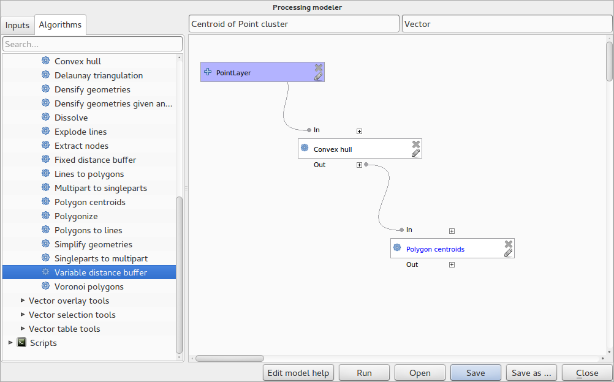
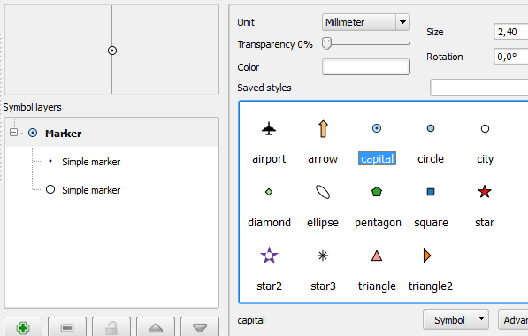
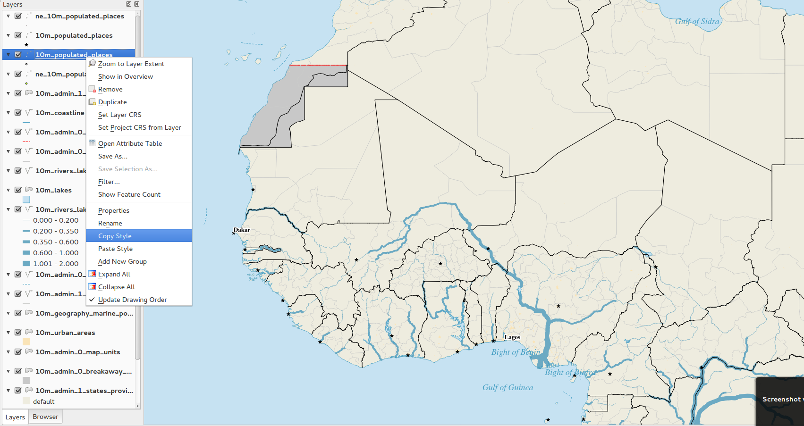

Jurnalul schimbărilor pentru QGIS 2.0¶
- Instrumentele de analiză
- Opțiunile Aplicației și ale Proiectului
- Navigatorul
- Furnizorii de date
- Caracteristică: Revizuirea Furnizorului de Date Raster
- Caracteristică: Suport pentru Oracle Spatial
- Caracteristică: S-a adăugat furnizorul de servicii Web Coverage
- Caracteristică: Reducere cumulativă cu 2% a rasterelor, în mod implicit
- Caracteristică: Format de identificare WMS
- Caracteristică: Suport WMTS
- Generalități
- Etichetarea
- Legenda Stratului
- Compozitorul de Hărți
- Caracteristică: Elemente HTML pentru hărți
- Caracteristică: Suport pentru pagini multiple
- Caracteristică: Expresii în etichetele compozitorului
- Caracteristică: Traiectorii pentru auto-aliniere
- Caracteristică: Traiectorii pentru aliniere, adăugate manual
- Caracteristică: Generarea seriilor de hărți
- Caracteristică: Suport pentru previzualizarea automată în cadrul hărții
- Caracteristică: Amestecarea straturilor
- Caracteristică: Suport pentru etichete HTML
- Caracteristică: Legendă multicoloană, în compozitor
- Caracteristică: Gestionare mai bună a hărților din compozitor
- Plugin-urile
- Posibilitatea de programare
- Simbologia
- Caracteristică: Proprietăți definite cu ajutorul datelor
- Caracteristică: Management îmbunătățit pentru straturile simbolurilor
- Caracteristică: Suport pentru transparență, în cadrul definițiilor de culoare
- Caracteristică: Controlul culorii, în cazul straturilor raster
- Caracteristică: Copiere simbologie între straturi
- Caracteristică: Salvarea stilurilor în baza de date
- Caracteristică: Suport pentru gamele de culori
- Caracteristică: Setarea stilurilor implicite, personalizate, pentru toate tipurile de straturi
- Interfața cu Utilizatorul
- Caracteristică: O nouă temă pentru pictograme
- Caracteristică: File laterale, grupuri retractabile
- Caracteristică: Notificări discrete
- Caracteristică: Font personalizat pentru aplicație și foaie de stil Qt:
- Caracteristică: Butoane și ferestre de alegere live a culorii
- Caracteristică: Adnotări SVG
- Caracteristică: Drag and drop în constructorul de formulare
- Caracteristică: Instrument de acțiuni implicite
Instrumentele de analiză¶
Caracteristică: Linia comenzilor de procesare¶
Pentru un acces rapid la funcționalitățile de geoprocesare, puteți lansa doar linia comenzilor de procesare (Ctrl + Alt + M) și să începeți să tastați numele instrumentului pe care îl cautați. Vi se vor prezenta opțiunile disponibile, gata pentru a fi lansate. Nu mai este nevoie să căutați printre meniuri pentru a găsi instrumentele. Acestea sunt acum la îndemâna dumneavoastră.

Caracteristică: Îmbunătățiri aduse Plugin-ului Heatmap¶
Pluginul Heatmap a înregistrat numeroase îmbunătățiri și optimizări, având ca rezultat crearea mult mai rapidă a hărților calorice. În plus, aveți acum posibilitatea de a alege funcția de bază care să genereze harta.

Caracteristică: Suport pentru Processing¶
Proiectul SEXTANTE a fost portat și încorporat, ca funcționalitate de bază, în QGIS. SEXTANTE a fost redenumit «Processing», introducându-se un nou meniu în QGIS, de unde se poate accesa un set bogat de instrumente de analiză spațială. Setul de instrumente de prelucrare are o funcționalitate incredibil de extinsă - cu un API de programare Python, permițând adăugarea cu ușurință a unor noi instrumente și puncte de acces la capacități de analiză pentru mai multe instrumente populare cu sursă deschisă, cum ar fi GRASS, OTB, SAGA, etc.

Caracteristică: Modelatorul de Procese¶
Una din marile funcționalități ale noului cadru de procesare este abilitatea de a combina grafic instrumentele. Utilizând Modelatorul de procese, puteți alcătui analize complexe pornind de la o serie de mici module, dedicate, fiecare, unui singur scop. Puteți salva aceste modele și apoi să le utilizați ca blocuri în modele mai complexe. O putere incredibilă, integrată chiar în QGIS, și foarte ușor de folosit!

Opțiunile Aplicației și ale Proiectului¶
Caracteristică: Definirea proiectului de pornire implicit și a șabloanelor de proiect¶
În QGIS 2.0 puteți specifica ce ar trebui să facă aplicația, atunci când pornește: Proiect nou (comportament clasic, începere cu un proiect gol), `` Cel mai recent`` (la startarea QGIS se va încărca ultimul proiect la care ați lucrat), Specific (întotdeauna se încarcă un anumit proiect). Puteți utiliza directorul șabloanelor de proiect, începând prin specificarea locației proiectelor șablon. Orice proiect stocat în acel director va fi disponibil pentru utilizarea ca șablon, atunci când se invocă meniul Proiect --> Nou din șablon.

Caracteristică: Variabilele de mediu ale sistemului¶
Variabile de mediu ale sistemului pot fi acum vizualizate și, multe dintre ele, configurate, în fereastra de opțiuni a aplicației. Acest lucru este util pentru platforme, cum ar fi Mac, unde interfața unei aplicații nu moștenește în mod obligatoriu variabilele de mediu ale utilizatorului. De asemenea, este util și la stabilirea/vizualizarea variabilelor de mediu pentru seturile de instrumente externe, controlate de instrumentele de procesare cum ar fi SAGA, GRASS, și pentru a depana ieșirile provenite din anumite secțiuni ale codului sursă.

Caracteristică: Scări de mărire definite de utilizator¶
De acum se poate configura o listă cu scări de mărire pentru aplicație și, opțional, pentru fiecare proiect. Lista va apărea într-un pop-up, deasupra casetei Scale din bara de stare a fereastrei principale, permițând accesul rapid la scări cunoscute, pentru o vizualizare și un lucru eficient cu sursele de date curente. Scările definite pot fi exportate într-un fișier XML, care poate fi importat în alte proiecte sau în alte aplicații QGIS.

Navigatorul¶
Caracteristică: Îmbunătățiri aduse panoului navigatorului¶
- Directoarele se pot filtra cu ajutorul metacaracterelor sau a expresiilor regulate
- O nouă
Pagină de casă pentru proiecte(directorul părinte pentru proiectul curent) - Vizualizare
Proprietățipentru directorul selectat într-o fereastră de dialog - Alegerea directorului care urmează să fie
Scanat rapid - Posibilitate de
Adăugare a unui directordirect înFavorite, prin intermediul ferestrei de răsfoire a fișierelor - Un nou /Volumes` pentru Mac (director ascuns, pentru accesul la drive-uri externe)
- Un nou grup
OWS(ansamblul conexiunilor disponibile către serverul de hărți) - Deschiderea unui al doilea navigator (
View -> Panels -> Browser (2)) pentru interacțiuni drag-n-drop între panouri - Posibilitate de sortare a pictogramelor după tipul grupului de elemente (sistem de fișiere, baze de date, servere de hărți)
Proprietățilestratului au de acum un aspect vizual mai plăcut

Furnizorii de date¶
Caracteristică: Revizuirea Furnizorului de Date Raster¶
Sistemul furnizorilor de date raster a fost complet revizuit. Acest lucru a avut drept rezultat una dintre cele mai bune funcționalități, și anume capacitatea de a salva orice strat raster ca un nou strat «Layer -> Save As…». În cadrul acestui proces, se poate decupa, reeșantiona și reproiecta stratul într-un nou Sistem de Coordonate de Referință. Aveți posibilitatea să salvați, de asemenea, un strat raster ca o imagine randată, deci, dacă, de exemplu, aveți un raster cu o singură bandă căruia i-ați aplicat o paletă de culori, veți putea salva stratul randat sub forma unui strat RGB georeferențiat.

Caracteristică: Suport pentru Oracle Spatial¶
QGIS 2.0 include de acum suport pentru Oracle Spatial.

Caracteristică: S-a adăugat furnizorul de servicii Web Coverage¶
QGIS oferă acum suport nativ pentru straturi Web Coverage Service - procesul de adăugare WCS fiind similar cu adăugarea straturilor WMS sau WFS.
Caracteristică: Reducere cumulativă cu 2% a rasterelor, în mod implicit¶
Multe produse de tip raster au un număr mare de aberații care au ca rezultat imagini cu aspect spălăcit. QGIS 2.0 intoduce un control mult mai fin asupra comportamentului de randare a rasterelor, inclusiv prin folosirea unui procentaj de reducere cumulativă, în mod implicit de 2%, ajungând până la 98%, atunci când se determină spațiul de culoare pentru imagine. Imaginile de mai jos prezintă o comparație între aici QGIS 1.8 (stânga) și QGIS 2.0 (dreapta), randând aceeași imagine cu setările implicite.

Caracteristică: Format de identificare WMS¶
De acum este posibilă selectarea formatului rezultatului, pentru instrumentul de identificare al straturilor WMS, atunci când sunt suportate de către server mai multe formate cunoscute. Formatele suportate sunt HTML, entitate (GML) și text simplu. Dacă este selectat formatul entitate (GML), rezultatul este în aceeași formă ca cel pentru straturile vectoriale, geometria putând fi evidențiată, iar entitatea, cu tot cu atribute și cu geometrie, poate fi copiată în clipboard și lipită unui alt strat.

Caracteristică: Suport WMTS¶
Clientul WMS din QGIS suportă acum WMTS (Web Mapping Tile Service), inclusiv selectarea sub-seturilor de date, cum ar fi feliile temporale. Când adăugați un strat WMS de la un server compatibil, vi se va solicita să selectați felia temporală ce urmează a fi afișată.

Generalități¶
Caracteristică: Quantum GIS este de acum cunoscut sub numele de «QGIS»¶
Cuvântul «Quantum» din denumirea «Quantum GIS» nu a avut nici o semnificație deosebită, dualitatea referirii la proiectul nostru atât prin Quantum GIS cât și prin QGIS provocând unele confuzii. Suntem în plin proces de eficientizare a proiectului, iar, ca parte a acestui proces, renunțăm în mod oficial la folosirea cuvântului Quantum - de acum înainte fiind cunoscuți doar sub numele de QGIS (scris cu majuscule). Vom actualiza toată baza de cod și materialele publicitate pentru a reflecta acest lucru.

Etichetarea¶
Caracteristică: Noul sistem de etichetare¶
Sistemul de etichetare a fost complet revizuit - incluzând acum multe caracteristici noi, cum ar fi umbrele, «indicatoarele de autostradă», multe alte opțiuni legate de date, și diverse îmbunătățiri de performanță. Ne îndepărtăm încet de sistemul cu «etichete vechi», și deși veți găsi în continuare funcționalitatea disponibilă pentru această versiune, trebuie să vă așteptați că va dispărea într-o versiune ulterioară.

Caracteristică: Expresii bazate pe proprietățile etichetelor¶
De acum, pentru proprietățile etichetelor se poate utiliza întreaga putere a etichetelor normale și a expresiilor cu reguli. Aproape fiecare proprietate poate fi definită prin valoarea unei expresii sau a unui câmp, oferindu-vă mai mult control asupra rezultatului etichetării. Expresiile se pot referi la un câmp (de exemplu, pentru a seta mărimea fontului la valoarea prezentă în câmpul «font») sau pot include o logică mult mai complexă.
Exemple de proprietăți atașabile:
- Font
- Dimensiuni
- Stil
- Dimensiunea zonei tampon

Caracteristică: Utilizarea vechiul motor de etichetare este dezaprobată¶
De acum, utilizarea motorului vechi de etichetare, disponibil în QGIS <= 1.8, este descurajată (adică dezaprobată), dar nu este stopată. Acest lucru permite utilizatorilor să-și migreze proiectele existente dinspre vechiul înspre noul motor de etichetare.
În QGIS 2.0 sunt valabile următoarele reguli pentru lucrul cu vechiul motor:
- Fila de etichetare dezaprobată este eliminată din fereastra de proprietăți a stratului vectorial, pentru proiectele deschise, mai noi sau mai vechi, care nu folosesc motorul vechi de etichetare.
- Fila elementelor dezaprobate rămâne activă pentru proiectele mai vechi deschise, dacă cel puțin unul dintre straturi le folosește, și nu dispare nici dacă salvați proiectul.
Fila de etichetelor dezaprobate poate fi activată/dezactivată pentru proiectul curent, prin comenzi introduse în consola Python, cum ar fi:
>>> QgsProject.instance().writeEntry('DeprecatedLabels', '/Enabled', True | False)
# or
>>> QgsProject.instance().removeEntry('DeprecatedLabels', '/')
NOTĂ: Există o probabilitate foarte mare ca motorul de etichetare dezaprobat să fie complet eliminat, înainte de următoarea versiune stabilă a QGIS. Vă rugăm să migrați vechile proiecte.

Legenda Stratului¶
Caracteristică: Răspunsul vizual al legendei și opțiunile acesteia¶
- Număr total de entități dintr-un strat, precum și per simbol
- În dreptul straturilor vectoriale aflate în modul de editare, există acum un creion roșu care indică modificările netransmise (nesalvate)
- Stratul activ este acum subliniat, pentru a-l observa în cazul selecțiilor multi-strat sau atunci când nu există nici o selecție
- Efectuarea unui clic pe spațiu alb, care nu face parte dintr-o listă, elimină o selecție existentă
Clicurile-dreaptasunt de acum tratate ca șiclicuri-stângaînainte de afișarea meniului contextual, acceptând un singur clic în loc de două- În mod opțional, grupurile și straturile pot avea denumirea scrisă îngroșat
- De acum, generarea pictogramele de previzualizare ale straturilor raster poate fi acum oprită, pentru proiecte în care randarea acestora se face lent

Caracteristică: Duplicarea unui strat de hartă existent¶
Este posibilă duplicarea straturilor vectoriale și raster, selectate în legenda straturilor hărții. Similar cu importarea încă o dată a aceleiași surse de date, ca strat separat, apoi copierea/lipirea stilului și simbologiei atributelor.

Caracteristică: Comenzi de editare pentru multi-straturi¶
Utilizatorul poate selecta de acum mai multe straturi în legendă, iar în cazul în care oricare dintre aceste straturi vectoriale se află în modul de editare, poate salva, reface sau anula modificările curente. Utilizatorul poate alege, de asemenea, să efectueze aceste acțiuni în toate straturile, indiferent de selecție.

Compozitorul de Hărți¶

Caracteristică: Suport pentru pagini multiple¶
De acum, o fereastră de compozitor singulară poate conține mai mult de o singură pagină.

Caracteristică: Expresii în etichetele compozitorului¶
Elementul etichetă din compozitorul versiunii 1.8 a fost destul de limitat, permițând utilizarea doar a unui singur simbol $CURRENT_DATE. În 2.0 s-a adăugat suport complet pentru expresii, conferind etichetelor finale o putere și un control mult mai mare.
O etichetă cu o expresie, cum ar fi:
This was printed on: [% format_date( $now, 'dd.MM.yyyy')%]
va fi evaluată la momentul imprimării (și în timpul afișării) pentru a genera:
This was printed on: 06.09.2013
Când este activată generarea atlasului, valorile atributelor entităților active în prezent vor fi, de asemenea, accesibile în expresii, permițând lucruri cum ar fi:
Asset ID [% "ID" %] and the Tree Type is [% "TreeType" %]

Caracteristică: Traiectorii pentru auto-aliniere¶
Pentru a avea hărți aspectuoase, este vital ca elementele conținute să fie frumos aliniate. În acest sens, au fost adăugate linii care permit alinierea ușoară a obiectelor prin simpla glisare a obiectelor.

Caracteristică: Traiectorii pentru aliniere, adăugate manual¶
Uneori este nevoie să aliniați obiectele în compozitor la o anumită distanță. Cu noile traiectorii manuale, pentru aliniere, veți putea alinia mai bine obiectele. Pur și simplu, trageți de rigla superioară sau de cea laterală, pentru a adăuga noi linii de ghidare.

Caracteristică: Generarea seriilor de hărți¶
A trebuit vreodată să generați o serie de hărți? Cu siguranță. De acum, compozitorul include un generator de serii de hărți, care utilizează funcțiile atlasului. Straturile pot fi puncte, linii, poligoane, iar valorile actualelor atribute ale entităților sunt disponibile pentru afișare, cu ajutorul etichetelor.

Caracteristică: Suport pentru previzualizarea automată în cadrul hărții¶
A trebuit vreodată să afișați înteaga hartă într-o fereastră de ansamblu, mai mică? Acum se poate. Harta cadru are acum posibilitatea de a afișa vederi de ansamblu, care se vor actualiza atunci când sunt deplasate. Această facilitate, alături de funcțiile de generare de bază a atlasului din compozitor, oferă posibilitatea creării unor hărți deosebite. Stilul cadrului de vizualizare utilizează aceleași modalități de stilizare ca orice hartă poligonală obișnuită, așa că nu veți întâlni restricții de creativitate.

Caracteristică: Amestecarea straturilor¶
Amestecarea straturilor face posibilă combinarea lor în moduri noi și interesante. În timp ce în versiunile mai vechi, puteați doar să faceți stratul transparent, acum există opțiuni mult mai avansate, cum ar fi „multiplicare”, „doar întunecare”, și multe altele.
Amestecarea poate fi utilizată în modul de vizualizare normal, precum și în compozitor. Pentru un scurt tutorial cu privire la modul de utilizare al amestecării pentru imaginile de fundal din compozitorul de hărți, puteți parcurge „Proiectarea hărților cu aspect învechit, folosind QGIS”.

Caracteristică: Suport pentru etichete HTML¶
Suportul pentru HTML a fost adăugat etichetelor din compozitor, pentru a vă oferi un control mai mare asupra hărți finale. Etichetele HTML suportă pe deplin css, html și chiar javascript, dacă vă pasionează.

Caracteristică: Legendă multicoloană, în compozitor¶
Legenda compozitorul suportă de acum coloane multiple. Divizarea unui strat, cu multe clase, în mai multe coloane este opțională. Straturile cu un singur simbol, sunt de acum adăugate, în mod implicit, ca elemente cu o singură linie. Trei stiluri diferite pot fi atribuite titlului stratului/grupului: Grup, Subgrup sau Ascuns. Stilurile titlurilor permit gruparea elemente în mod vizual, arbitrar. De exemplu, un strat cu un singur simbol poate fi afișat ca element cu o singură linie sau ca titlu de strat (ca în 1.8), simbolurile următoarelor straturi multiple putând fi grupate într-un singur grup (ascunzând titlurile) etc. Numărul de entități poate fi, de asemenea, adăugat etichetelor.

Caracteristică: Gestionare mai bună a hărților din compozitor¶
Următoarele îmbunătățiri au fost aduse gestionării hărților din compozitor:
- De acum, numele compozitorului poate fi definit la creare, fiind opțională alegerea de a porni de la alt compozitor
- Compozitoarele se pot duplica
Nou, pornind de la un șablonșiSpecific(în Composer Manager) creează un compozitor, pornind de la un șablon amplasat oriunde, în sistemul de fișiere- Proiectul părinte poate fi acum salvat direct din spațiul de lucru al compozitorului
- Toate acțiunile de gestiune sunt accesibile direct din spațiul de lucru al compozitorului

Plugin-urile¶
Caracteristică: Manager de plugin-uri revitalizat¶
În QGIS 1.x gestionarea plugin-urilor a fost, oarecum, confuză, datorită celor două interfețe - una pentru gestionarea plugin-urilor deja instalate, iar cealaltă pentru obținerea plugin-urilor python dintr-un depozit dedicat. În QGIS 2.0 introducem un nou manager de plugin-uri, unificat, care oferă o singură oprire pentru descărcarea, activarea/dezactivarea și, în general, gestionarea plugin-urilor dvs. De asemenea, interfața cu utilizatorul devine superbă, datorită panourilor laterale și pictogramelor ușor de recunoscut!

Posibilitatea de programare¶
Caraceristică: O Nouă Consolă Python¶
Noua consolă Python vă oferă și mai multă putere. De acum, suportă auto-completare, evidențierea sintaxei, setări pentru reglarea fontului. Editorul de cod lateral permite introducerea mai ușoară a blocurilor de cod de mari dimensiuni, având abilitatea de a deschide și rula orice fișier Python, în sesiunea QGIS.

Caracteristică: Mult mai multe funcții, în cadrul expresiilor¶
Motorul de expresii fiind folosit din ce în ce mai mult în QGIS, pentru a permite lucruri de genul etichetelor pe bază de expresie și simbol, din ce în ce mai multe funcții au fost adăugate, toate fiind accesibile în constructorul de expresii. Funcțiile sunt însoțite de descriere și ghiduri de utilizare complete, ceea ce sporește ușurința de utilizare.

Caracteristică: Expresii cu funcții personalizate¶
Dacă motorul de expresii nu dispune de funcția de care aveți nevoie, nu trebuie să vă îngrijorați. Noile funcții pot fi adăugate prin intermediul unui plug-in, cu ajutorul unui simplu API Python.

Caracteristică: Un nou API Python, mai clar¶
API-ul Python a fost restructurat pentru a permite un stil de lucru mult mai orientat către Python. API-ul QGIS 2.0 folosește SIP V2 care elimină logica întortocheată a funcțiilor toString(), toInt(), de care era nevoie în lucrul cu valori. De acum, tipurile sunt transformate în tipuri Python native, având ca rezultat un API mult mai frumos. Accesul la atribute se face chiar pe entitate, cu ajutorul unei simple chei de căutare, fără căutarea într-un index și în hărțile de atribute.
>>> feature['mycolumn'] = 10
>>> feature['mycolumn']
10
De asemenea, a fost îmbunătățit modul în care sunt citite entitățile dintr-un strat, ceea ce permite execuţia multifilară, în versiunile viitoare.
for feature in layer.getFeatures():
print feature['mycolumn']

Caracteristică: Un cod compatibil cu cel al versiunilor 1.x¶
Deoarece aceasta este o versiune majoră, ea nu este complet compatibilă cu versiunile API 1.x anterioare. În cele mai multe cazuri, portarea codului dvs ar trebui să fie destul de simplă - puteți folosi acest ghid în acest sens. Vă rugăm să folosiți lista de discuții a dezvoltatorilor, dacă aveți nevoie de asistență suplimentară.

Caracteristică: Proiecte macro, în Python¶
Un modul Python, salvat într-un fișier project.qgs, poate fi încărcat și să aibă funcții specifice de rulare, pentru următoarele evenimente ale proiectului:
openProject()saveProject()closeProject()
Chiar dacă rulează, un macro poate fi configurat în opțiunile aplicației.

Simbologia¶
Caracteristică: Proprietăți definite cu ajutorul datelor¶
Cu ajutorul noilor proprietăți definite cu ajutorul datelor, este posibilă controlarea tipului simbolului, mărimea, culoarea, rotirea, și multe alte proprietăți ale entităților.

Caracteristică: Management îmbunătățit pentru straturile simbolurilor¶
Noul aspect al straturilor din care este compus un simbol este mai clar, fiind structurat sub forma unui arbore, permițând accesul ușor și rapid la straturi.

Caracteristică: Suport pentru transparență, în cadrul definițiilor de culoare¶
În cele mai multe locuri în care selectați culorile, QGIS vă permite acum să specificați canalul alfa (care determină gradul de transparență al unei culori). Acest lucru vă permite să creați hărți cu aspect deosebit și să ascundeți cu ușurință datele pe care nu doriți să le vadă utilizatorii.

Caracteristică: Controlul culorii, în cazul straturilor raster¶
QGIS 2.0 vă permite să controlați cu precizie modul în care doriți să arate straturile raster. Acum aveți control complet asupra luminozității, contrastuliu și saturației straturilor raster. Există chiar și opțiuni pentru afișarea rasterelor în tonuri de gri sau pentru colorarea cu nuanța specificată.

Caracteristică: Copiere simbologie între straturi¶
Acum este foarte ușor de copiat simbologia dintr-un strat în altul. Dacă lucrați cu mai multe straturi similare, puteți efectua, pur și simplu, clic-dreapta pe un strat, să alegeți Copiere Stil din meniul contextual și apoi să efectuați clic-dreapta pe un alt strat, urmând să alegeți Lipire-Stil.

Caracteristică: Salvarea stilurilor în baza de date¶
Dacă utilizați o bază de date pentru stocarea datelor vectoriale, puteți stoca acum definițiile pentru stilurile straturilor direct în baza de date. Acest lucru ușurează partajarea stilurilor pentru straturi, într-un mediu multi-utilizator, sau într-o întreprindere.

Caracteristică: Suport pentru gamele de culori¶
Gamele de culori sunt acum disponibile în multe din setările simbologiei QGIS, aplicația fiind livrată cu un set de game bogat și extensibil. Aveți posibilitatea să vă proiectați, de asemenea, propria temă, multe altele cpt-city fiind incluse în QGIS acum «din start». Chiar și gamele de culori au suport complet pentru transparență!

Caracteristică: Setarea stilurilor implicite, personalizate, pentru toate tipurile de straturi¶
De acum, QGIS vă permite să controlați modul în care vor fi desenate noile straturi, atunci când acestea nu au deja un stil .qml definit. Puteți hotărî, de asemenea, nivelul de transparență implicit pentru noile straturi și dacă simbolurile ar trebui să aibă asignate culori aleatorii.

Interfața cu Utilizatorul¶
Caracteristică: O nouă temă pentru pictograme¶
S-a utilizat tema «GIS» pentru pictograme, acest lucru introducând un nivel îmbunătățit de consistență și profesionalism în interfața cu utilizatorul.

Caracteristică: File laterale, grupuri retractabile¶
S-a standardizat aspectul filelor și s-au introdus grupurile de casete expandabile în multe dintre ferestrele de dialog, pentru a face mai ușoară setarea diferitelor opțiuni și pentru a utiliza mai bine ecranul.

Caracteristică: Notificări discrete¶
În multe cazuri, vrem să vă prezentăm o informație, dar fără a vă întrerupe munca. Cu noul sistem de notificare al QGIS, puteți afla informațiile importante prin intermediul unei bare de mesaje galbene, care apare în partea de sus a suportului hărții, dar nu este nevoie să vă ocupați de ea, când aveți altceva de făcut. Programatorii pot crea acest gen de notificări (de exemplu, pentru un plug-in) folosind API-ul nostru pentru Python.

Caracteristică: Font personalizat pentru aplicație și foaie de stil Qt:¶
De acum, se poate folosi fontul sistemului pentru interfața aplicației cu utilizatorul. Orice plugin C++ sau Python, care este subordonat interfeței aplicației QGIS, sau care a copiat/aplicat interfața aplicației, îi poate moșteni stilul, lucru util pentru remedieri de interfață pe diverse platforme, și atunci când se utilizează widget-uri Qt personalizate, cum ar fi QgsCollapsibleGroupBox.
Foaia de stil a interfeței aplicației, generată pentru platforma curentă, poate fi accesată după lansare (în PyQGIS):
qgis.utils.iface.mainWindow().styleSheet()

Caracteristică: Butoane și ferestre de alegere live a culorii¶
Fiecare buton de selectare a culorii, din interfață, a fost actualizat pentru a oferi un răspuns vizual, în funcție de componenta «alpha», cunoscută și sub numele de transparență, a culorii curente. Selectorul de culoare, deschis prin noile butoanele colorate, va fi de acum implicit pentru sistemul de operare. În cazul în care utilizatorul are bifată opțiunea de Folosire a dialogurilor de selectare live a culorii în Opțiuni -> General -> Aplicație, orice schimbare în selectorul de culoare va fi afișată imediat în butonul de culoare și în orice element editat în mod curent, acolo unde este posibil.

Caracteristică: Adnotări SVG¶
De acum, în QGIS 2.0 puteți adăuga adnotări SVG la harta dvs. - fie poziționându-le într-un loc specific, fie într-o poziție relativă pe suportul hărții.

Caracteristică: Drag and drop în constructorul de formulare¶
QGIS 2.0 etalează un nou sistem, deosebit, pentru crearea formularelor de introducere a datelor. Cu ajutorul designer-ului drag and drop, puteți crea formulare care arată elegant, având file dedicate grupării câmpurilor comune. De acum, introducerea datelor este mult mai ușor de controlat.

Caracteristică: Instrument de acțiuni implicite¶
Dacă folosiți acțiuni în straturile vectoriale (sarcini mici, care pot rula atunci când faceți clic pe o entitate), vă va plăcea noul instrument pentru acțiuni, din bara de instrumente. Cu aceasta puteți selecta o acțiune activă, după care să faceți clic pe entități pentru invocarea acțiunii.